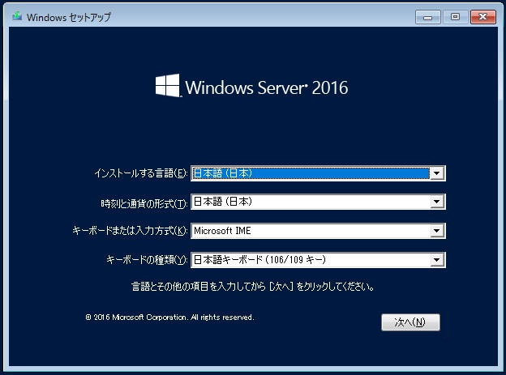
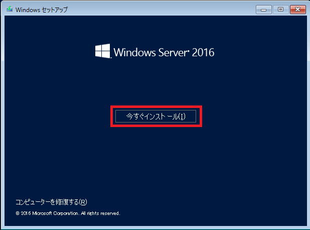
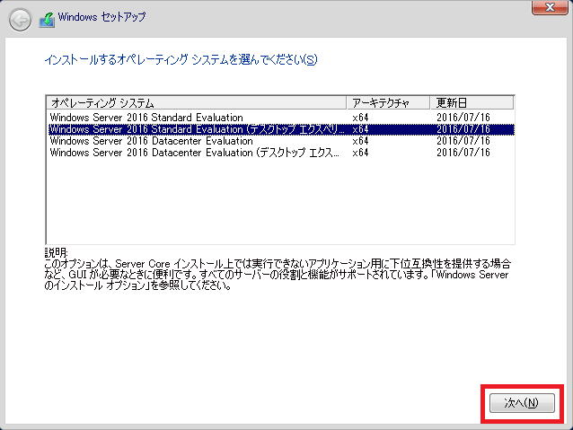
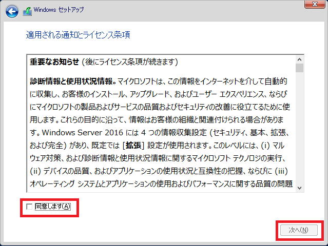
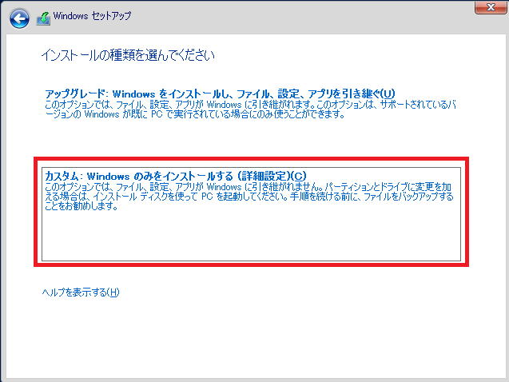
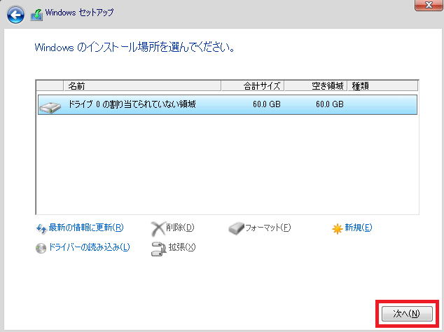
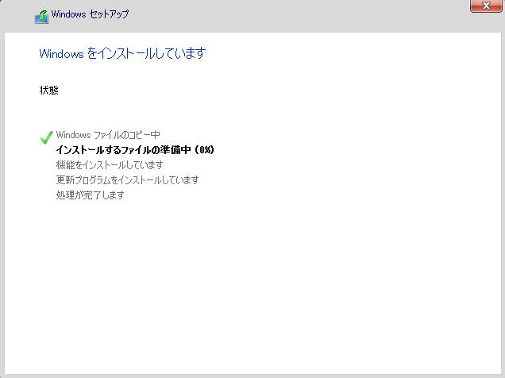
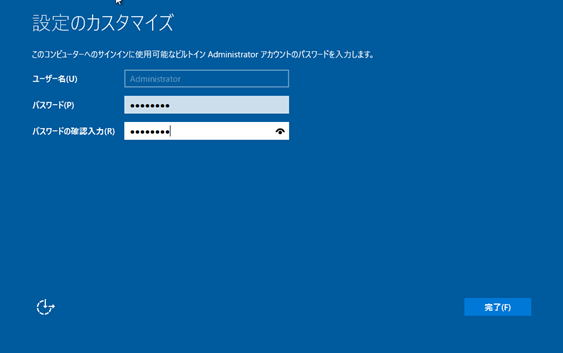

WindowsServerインストール¶
はじめに¶
本ドキュメントはWindowsServerのインストール、初期設定に関する内容を記述します。
インストール手順¶
注釈
・本手順はWindows Server 2016を想定して書かれています。
特段の記載がない場合を除き、管理者ユーザーで操作することを想定しています。
・VMwareやVirtualBoxといった仮想環境上への構築を前提としています。
0. 評価版のダウンロード
注釈
評価版ソフトウェアを利用して解説するが手順は通常版(製品版)と変わりない。
評価版ソフトウェアを以下URLリンク先からダウンロードする。
※ユーザー登録の必要がある。
ISO を選択してダウンロードを開始する。
1. OSインストール
ダウンロードしたISO を仮想マシン へマウントしてインストールを開始する。Windowsのインストールダイアログが表示されるため、設定項目を選択。インストールする言語日付と通貨の形式キーボードまたは入力方式キーボードの種類選択完了後、[次へ]ボタンをクリックする。次画面にて、[今すぐインストール]リンクをクリック。

インストールするオペレーティングシステムの選択画面が表示されるので、 インストールを行うWindowsのエディションを選択する。

注釈
Windows Server 2016 Standard Evaluation・・・スタンダード版のサーバコア
Windows Server 2016 Standard Evaluation (デスクトップ エクスペリエンス)・・・スタンダード版のGUI版(通常版)
Windows Server 2016 Standard Datacenter Evaluation・・・データセンター版のサーバコア
Windows Server 2016 Standard Datacenter Evaluation (デスクトップ エクスペリエンス)・・・データセンター版のGUI版(通常版)
ソフトウェアライセンス条項が表示される。 内容を確認し[同意します]にチェックをつけ、[次へ]ボタンをクリック。

インストールの種類を選択する。 今回は新規構築のため[カスタム]を選択。

インストールするハードディスクの選択をする。 今回は[ドライブ 0 の割り当てられない領域]を選択し、[次へ]ボタンをクリック。 ※パーティションが分割されている場合もあるため注意すること。

OSのインストールが開始される。 インストールが終了とインストーラーはPCの再起動（数回）する。 再起動後、インストールの最終処理を実行し初期設定を行う。

初期設定¶
インストール完了後、初回ログイン前にAdministratorのパスワード設定を要求されるため、 パスワード入力画面にて、Administratorのパスワードを入力し設定する。

以上でインストールは完了。